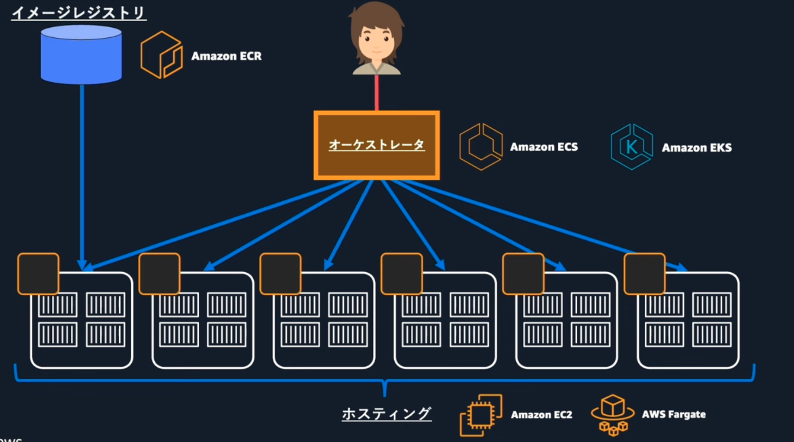

コンテナ¶
コンテナのメリット¶
2013年にDockerがリリースしたDockerによりコンテナ技術は開発者に一気に浸透した。 アプリケーションとその依存関係を一つのコンテナイメージとして扱うことで、一貫した動作環境を提供することを可能としました。
コンテナの仕組み¶
OS上にコンテナを管理するSWであるコンテナエンジン（Docker/Podman)を起動させる。 コンテナエンジンの上にミドルウェアやアプリケーションをセットしたの含むコンテナを起動させる。 一般的な仮想マシン(VMware/KVM etc..)と比較するとゲストOSを作らないことによる軽量さが挙げられる。 コンテナの軽量性などはクラウドと相性が良く、クラウドネイティブなシステムに利用される。

オーケストレーション¶
実行するコンテナが増えていくと、管理する対象が増加していく。 また、コンテナは停止や起動を頻繁に行うこともあるため、手動での管理に大きなコストがかかる。
コンテナのオーケストレーションとは、コンテナのネットワークやスケジュリング、リソース管理、障害復旧といったコンテナの管理に必要な処理を自動で行い、コンテナの運用コストを低下させる技術である。
代表的なオーケストレーションサービスにはKubernetesやAWS ECSが挙げられる。
コンテナオーケストレーションの全体像¶
コンテナサービスには、イメージを補完するレジストリやコンテナを実行するためのホスティングなども必要。
要素 |
役割 |
説明 |
|---|---|---|
レジストリ |
コンテナイメージの保存と配布 |
コンテナイメージを格納し、必要なときに引き出せるようにする場所。Docker HubやGoogle Container Registry、Amazon ECRなどが含まれます。 |
ホスティング |
コンテナの実行環境の提供 |
コンテナを実行するためのインフラストラクチャやプラットフォーム。EC2（Amazon Elastic Compute Cloud）やFargate（サーバーレスコンテナサービス）などが含まれます。 |
オーケストレータ |
コンテナのデプロイ、管理、スケーリング、ネットワーキング、および監視の自動化 |
コンテナのライフサイクル全体を管理するツール。Kubernetes、Amazon ECS、Docker Swarm、Apache Mesosなどがあります。 |
 なぜ今コンテナなのか